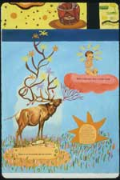
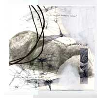

from Sprung Monuments
|
Co-ordinated
by
Kornelia Freitag &
Brian Reed
|
Pam
Brown
David Colón
Arpine Grenier
Adeena Karasick
Nicole Markotic
Joan Retallack
Hazel Smith
|
[about
this section]
Christine
Stewart
Meredith Quartermain
Susan Clark
Lissa Wolsak
Kathryn Macleod |
[about
this section]
Co-ordinator
Jo
Ann Wasserman
|
Patricia
Dienstfrey, “Love
and Illustration”
Brian
Kim Stefans “The Truth About Me” an interview
with Kim Rosenfield
Kim
Rosenfield, “Verbali”
|
)postcard
With
email from:
| Toni
Maraini, Anne Dewey, Robin Anderson, Megan Adams, Susan Gevitz,
Cynthia Hogue, Anne Waldman, John Paul Lederach, Elisabeth Frost,
Jo Ann Wasserman, Renata Morresi, Ann Vickery, Kornelia Freitag,
Linda Russo, Arielle Greenberg, Hilda Bronstein, Camille Roy,
Mendi Lewis Obadike, Marieke Gaboury, and Elizabeth Robinson |
[about
this section]
|
Sawako
Nakayasu translating
Ito Hiromi
Rosa
Alcalá translating Lourdes
Vázquez
Louis
Armand & Clare Wallace translating
Véronique Vassiliou
|
|
|
ROBIN
HYDE & NEW ZEALAND MODERNISM
Co-ordinated by
Michele Leggott
& Ann Vickery
Robin
Hyde “Exquisite
Bond”
Robin
Hyde, Excerpt from The Book of Nadath
Robin
Hyde, “The Flying-Off Place”
“Stumblers
in the hinterlands”: Robin Hyde's letters to Eileen Duggan
with editorial note by Lisa Docherty
Lisa
Docherty, “ ‘Do I Speak Well?’: The
Letters of Robin Hyde”
Patrick
Sandbrook, introduction to The Godwits Fly
Michele
Leggott, “Opening the Archive: Robin Hyde, Eileen
Duggan and the Persistence of Record”
Mary
Paul, “Robin Hyde: A Political Reading”
THE
POETICS OF ENCOUNTER
Co-ordinated by
Kimberly Lamm
Kimberly
Lamm, Kristin Prevallet, and Melissa Buzzeo,
“Inquiries: A Conversation on Lyn Hejinian's The Language
of Inquiry”
Susan
Gevirtz, “ ‘Ruth’ in Mars”
Norma
Cole “For Susan Gevitz's CAESAREA: Herod's City”
Kate
Fagan “ ‘A work of acknowledgement,’ a
poetics of Happily”
Michael
Eng “Among Murderers and Madmen– Ingeborg Bachmann,
Fascism, and the Experience of Writing”
Kimberly
Lamm, “The Clarity of Fanny Howe's Doubt”
Susan
M. Schultz “The Stutter in the Text: Editing and
Historical Authority in the Work of Susan Howe”
Dell
Olsen, Interview with Joan Retallack
[about
this section]
|
Short
commentaries on recent writing by:
|
Logan
Esdale
on Calyx
Susan
M. Schultz on Ann Lauterbach's Selected Poems
Rod
Mengham on Jennifer Moxley's Imagination Verses
MTC
Cronin on JS Harry's Sun Shadow, Moon Shadow
Arielle
Greenberg on Linda Russo's Secret Silent Plan
Bob
Perelman on Jo & Drew Milne's Pianola
|
[about
this section]
in'
print
-- recent publications
up
date
-- news and announcements
|
Collaboration
|
Frances
Presley and Elizabeth James, “Neither
the One Nor the Other”
Lyn
Hejinian and Emilie Clark, “The Lake”
Susan
Bee and Charles Bernstein, Sprung Monuments
Sheila
Murphy and Charles Alexander, “Prayer, Rupture,
Dwelling”
Rena
Rosenwasser on “Kelsey Street Press's Collaboration
Series”
|
[about
this section]

from "The
Lake"
Oxford
Brookes Colloquium:
The
Politics of Presence: Re-reading the Writing Subject in “Live”
and Electronic Performance, Theatre and Film Poetry
Organized
by Romana Huk
in-Conference
selection
co-ordinated Romana Huk and Hilda Bronstein
Romana
Huk ,
Introduction
Caroline
Bergvall,
“Piece
in Progress: About Face (Goan Atom, 2)”
Tyrus
Miller, The Poetics of “What is the Case”: Péter
Forgács Wittgenstein Tractatus and the Documentary
Fact
Joan
Retallack, “Writers-Readers-Performers: Partners
in Crime”
Dell
Olsen, “Degrees of Liveness, Live and Electronic
Subjects: Leslie Scalapino, Fiona Templeton, and Carla Harryman”
Alex
Goody, “‘The Subject of Hypertextural Poetry:
Performing Susan Howe”
Robert
Sheppard, “The Performing and the Performed: Performance
Writing and Performative Reading”
Co-ordinated
by
Anya
Lewin
|
Positions
in Space/Instants in Time by
Odilia Jarman
“The
X,Y, Z of It”
by Melody Sumner Carnahan, Joan La Barbara, Robert Ashley,
and Michael Sumner

[click
to enter]
|
How(ever)
Archive [1983-1992], and How2, V. I, n. 1-3.
|